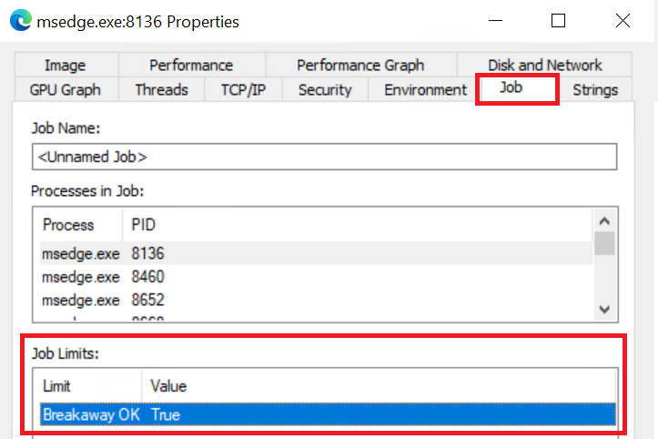

こんにちは、Japan Developer Support Core チームの松井です。特定の状況下で ClickOnce アプリケーションの起動を試みた際に、アプリケーションが起動せず反応がないように見える事象が発生する場合があります。本記事では、この事象に関する一般的な原因とその回避方法について説明します。
現象
スタート メニューやデスクトップのショートカット、または Web ブラウザー上のリンクなどから ClickOnce アプリケーションを起動しようとした際に、アプリケーションが起動せずエラーも表示されない場合があります。(起動時にエラーダイアログが表示される場合はこちらの記事を参考にしてください。)
一般的な原因
エクスプローラーやブラウザーがジョブ オブジェクトと呼ばれるプロセス グループに属している場合、既定ではすべての子プロセスもジョブ オブジェクトに関連付けられ、ジョブ オブジェクトに指定された制限の影響を受けます。例えば、アプリケーションが使用できるシステム リソースが制限されたり、ジョブ オブジェクトを閉じるときに関連付けられたプロセスも終了されるといった影響を受ける可能性があります。そのため、起動された ClickOnce ローダーおよび ClickOnce アプリケーションがジョブ オブジェクトの制限の影響を受けないよう、ClickOnce ローダーのプロセスはジョブ オブジェクトから分離して作成されます。
ジョブ オブジェクトから分離してプロセスを作成するためには、ジョブ オブジェクトに JOB_OBJECT_LIMIT_BREAKAWAY_OK もしくは JOB_OBJECT_LIMIT_SILENT_BREAKAWAY_OK のいずれかの制限が設定されている必要があります。エクスプローラーやブラウザーがジョブ オブジェクトに属している場合で、かつ JOB_OBJECT_LIMIT_BREAKAWAY_OK と JOB_OBJECT_LIMIT_SILENT_BREAKAWAY_OK のいずれの制限も設定されていない場合、ClickOnce ローダーのプロセスの作成に失敗してアプリケーションも起動されず、ユーザーからは何も起こらないように見える事象が発生します。これは ClickOnce ローダーの起動の仕組みに起因する想定された動作です。
本事象の発生が報告されているシナリオ
前節で説明した状況が発生することが報告されている一般的なシナリオとしては以下のようなものがあります。ただし、これらに限定されるものではなく、あくまでもジョブ オブジェクトに属している状況が発生する可能性のある例となりますのでご注意ください。
1. タスク スケジューラーのタスクからエクスプローラーやブラウザーが起動されている
タスク スケジューラーのタスクから起動されるプロセスは、タスク スケジューラーによって作成されたジョブ オブジェクトに属します。この場合、ジョブ オブジェクトには JOB_OBJECT_LIMIT_BREAKAWAY_OK と JOB_OBJECT_LIMIT_SILENT_BREAKAWAY_OK のいずれの制限も設定されていないため、本事象が発生します。
2. ログオン スクリプトからブラウザーが起動されている
Edge がログオン スクリプトから起動されると、Edge のメイン プロセスがジョブ オブジェクトに属している状態となる場合があります。この場合、ジョブ オブジェクトには JOB_OBJECT_LIMIT_BREAKAWAY_OK と JOB_OBJECT_LIMIT_SILENT_BREAKAWAY_OK のいずれの制限も設定されておらず、本事象が発生します。
3. 管理者承認モードを無効にした状態でビルドイン管理者ユーザーでログオンしている
管理者承認モードを無効にした状態でドメイン管理者などのビルトイン管理者ユーザーでログオンしている場合、エクスプローラーは管理者権限で開始されます。しかし、"What is the CreateExplorerShellUnelevatedTask scheduled task?"の記事で解説されているように、エクスプローラーは管理者特権なしで実行する必要があるため、管理者権限で実行されていることを検出した場合は CreateExplorerShellUnelevatedTask タスクというスケジュールされたタスクを使用して自分自身のプロセスの昇格の解除を試みます。この動作に伴い、エクスプローラーがタスク スケジューラーのタスクから起動することとなるため、1. の項で説明した状況となり本事象が発生します。この事象は "Windows 10 では、組み込みの管理者アカウントから ClickOnce アプリケーションが起動しない場合がある" の KB でも説明されています。
回避方法
本事象を事象が発生する状況の場合、以下のいずれかの方法で ClickOnce アプリケーションを起動できる場合があります。
1. ブラウザーのプロセスをすべて終了してから起動しなおす
タスク スケジューラーのタスクやログオン スクリプトからブラウザーが起動されたことでジョブ オブジェクトに属している場合、ブラウザーをジョブ オブジェクトに属さない状態で起動しなおすことで本事象を回避できます。
ブラウザーは複数のプロセスで構成されている場合があるため、ウィンドウを閉じるだけではジョブ オブジェクトに属しているメイン プロセスが残ってしまう場合があります。そのため、タスク マネージャーなどでブラウザーのプロセスをすべて終了してから再度ブラウザーを起動してください。Edge の場合、プロセス名は msedge.exe となります。
2. ClickOnce ローダーを直接起動する
本事象は ClickOnce ローダーのプロセスの起動に失敗することによって発生します。ClickOnce ローダーは一度起動するとしばらくの間は起動したままとなり、同じユーザー コンテキストであれば再利用されます。そのため、ClickOnce ローダーを直接起動してから ClickOnce アプリケーションを起動することで本事象を回避することができます。
ClickOnce ローダーを直接起動するためには、エクスプローラーやコマンド プロンプトから以下のパスのファイルを実行します。
1 | C:\Windows\Microsoft.NET\Framework64\v4.0.30319\dfsvc.exe |
補足: ClickOnce アプリケーションの起動フロー
ClickOnce アプリケーションを起動する際の処理フローは以下の通りです。
(rundll32.exe 経由) participant Loader as ClickOnce ローダー
(dfsvc.exe) participant Cache as ClickOnce キャッシュ participant App as アプリケーション User->>Browser: ClickOnce リンクをクリック Browser->>Server: 配置マニフェスト (*.application) をリクエスト Server-->>Browser: 配置マニフェスト (.application) をダウンロード Note over Browser: 拡張子 (.application) または
MIME タイプ (application/x-ms-application) を確認 Browser->>Dfshim: rundll32.exe 経由で dfshim.dll を呼び出し Dfshim->>Dfshim: dfsvc.exe が起動しているか確認 alt dfsvc.exe が未起動の場合 Dfshim->>Loader: dfsvc.exe を起動 Note over Dfshim,Loader: ジョブ オブジェクトから分離して起動
(CREATE_BREAKAWAY_FROM_JOB フラグ) end Dfshim->>Loader: アプリケーションの開始を指示 Loader->>Loader: 配置マニフェストを解析 Loader->>Server: アプリケーション マニフェスト (.manifest) をリクエスト Server-->>Loader: アプリケーション マニフェストをダウンロード Loader->>Loader: アプリケーション マニフェストを解析 Loader->>Server: 必要なアセンブリとファイルをリクエスト Server-->>Loader: アプリケーションファイルをダウンロード Loader->>Cache: ファイルを ClickOnce キャッシュに配置 Loader->>App: アプリケーションを起動 App-->>User: アプリケーションが表示される
処理フローの詳細
配置マニフェストのダウンロード
- ユーザーが Web サイト上の ClickOnce アプリケーションのリンクをクリックすると、ブラウザーが ClickOnce アプリケーションの配置マニフェスト (*.application ファイル) をダウンロードします。
- 配置マニフェストには、アプリケーションの配置情報、更新ポリシー、アプリケーション マニフェスト (*.exe.manifest ファイル) の場所といった構成が記述されています。
ClickOnce ローダーの起動
- ブラウザーは、ファイルの拡張子 (.application) または MIME タイプ (application/x-ms-application) に基づいて、rundll32.exe 経由で dfshim.dll を呼び出します。
- dfshim.dll は、dfsvc.exe (ClickOnce ローダー) が既に起動しているかを確認します。
- dfsvc.exe が起動していない場合、dfshim.dll は
CREATE_BREAKAWAY_FROM_JOBフラグを指定し、dfsvc.exe をジョブ オブジェクトから分離した状態で起動します。 - dfshim.dll は dfsvc.exe に対してアプリケーションの開始を指示します。
アプリケーション マニフェストの取得
- ClickOnce ローダー (dfsvc.exe) は配置マニフェストを解析し、アプリケーション マニフェストの場所を特定します。
- アプリケーション マニフェストには、実行に必要なアセンブリ、ファイル、依存関係などの構成が記述されています。
ClickOnce キャッシュへのダウンロードと配置
- ClickOnce ローダーは、アプリケーション マニフェストに記載されているコンテンツをダウンロードします。
- ダウンロードしたファイルは、ClickOnce キャッシュ (
%LocalAppData%\Apps\2.0\配下) に配置されます。
アプリケーションの起動
- すべての必要なファイルが配置されると、ClickOnce ローダーがアプリケーションを起動します。
- アプリケーションは ClickOnce キャッシュ内の場所から実行されます。
本事象が発生するポイント
本事象は、2. ClickOnce ローダーの起動 のステップで発生します。
具体的には、dfshim.dll が dfsvc.exe を起動しようとした際に問題が発生します。ブラウザーがジョブ オブジェクトに属している場合で、そのジョブ オブジェクトに JOB_OBJECT_LIMIT_BREAKAWAY_OK または JOB_OBJECT_LIMIT_SILENT_BREAKAWAY_OK の制限が設定されていない場合、CREATE_BREAKAWAY_FROM_JOB フラグを使用した dfsvc.exe のプロセス作成に失敗します。このため、以降のステップが実行されず、アプリケーションが起動しない状態となります。
補足: ジョブ オブジェクトに属していることを確認する方法
エクスプローラーやブラウザーのプロセスがジョブ オブジェクトに属しているかどうかについては、以下の手順で確認できます。
以下の URL から Process Explorer をダウンロードして任意のフォルダーに展開します。
https://learn.microsoft.com/ja-jp/sysinternals/downloads/process-explorer
Process Explorer を管理者として実行します。
エクスプローラーやブラウザーのプロセス (例:
explorer.exeやmsedge.exe) を右クリックして [Properties] を選択します。msedge.exeを確認する場合は、ツリーのルートにあるメイン プロセスのmsedge.exeを選択してください。タブに [Job] が表示されていない場合、当該プロセスはジョブ オブジェクトに属していません。この場合、ClickOnce アプリケーションが起動しない原因は他にある可能性があります。
タブに [Job] が表示されている場合、当該プロセスはジョブ オブジェクトに属しています。[Job] タブを選択し、[Limit flags] の欄に
BREAKAWAY_OKまたはSILENT_BREAKAWAY_OKが含まれているかどうかを確認します。いずれの Limit flag も含まれていない場合は、ClickOnce アプリケーションが起動しない原因となります。
いずれかの Limit flag が含まれている場合、ClickOnce アプリケーションが起動しない原因は他にある可能性があります。

補足: 本事象が発生したときのログ
本事象が発生した場合、ClickOnce ローダー (dfsvc.exe) 自体が起動できていない状況のため、ClickOnce ローダーのエラー メッセージも表示されず、ログにもエラーなどが記録されません。
Process Monitor ログを取得して rundll32.exe のプロセスでフィルタリングすると、dfsvc.exe のプロセスを起動するための C:\Windows\Microsoft.NET\Framework64\v4.0.30319 フォルダーのアクセスやアプリケーション固有の Image File Execution Option (IFEO) レジストリ キーへのアクセスのイベントのすぐ後で Process Exit に進んでおり、プロセスが起動できていない状況が確認できます。

正常に起動できた場合は、下図のように dfsvc.exe のファイルにアクセスするイベントが続き Process Create に進んでいることが確認できます。
本ブログの内容は弊社の公式見解として保証されるものではなく、開発・運用時の参考情報としてご活用いただくことを目的としています。もし公式な見解が必要な場合は、弊社ドキュメント (https://learn.microsoft.com や https://support.microsoft.com) をご参照いただくか、もしくは私共サポートまでお問い合わせください。